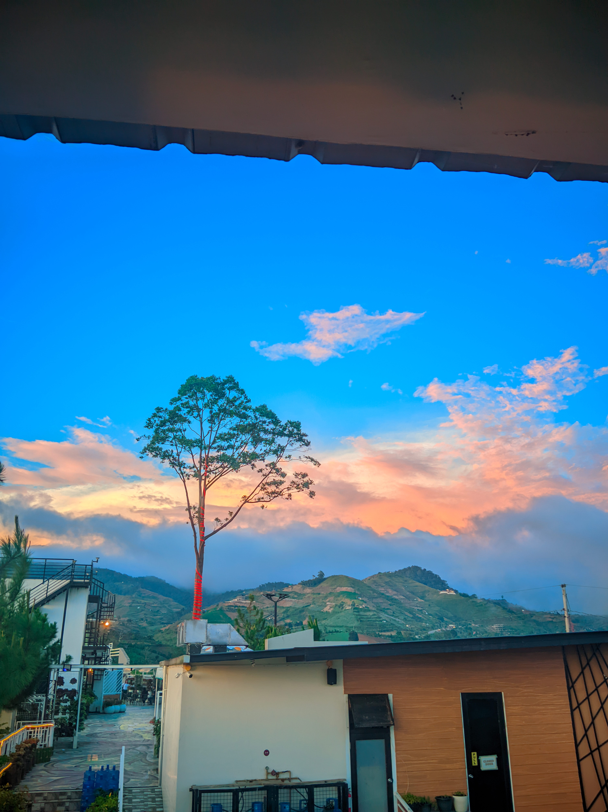
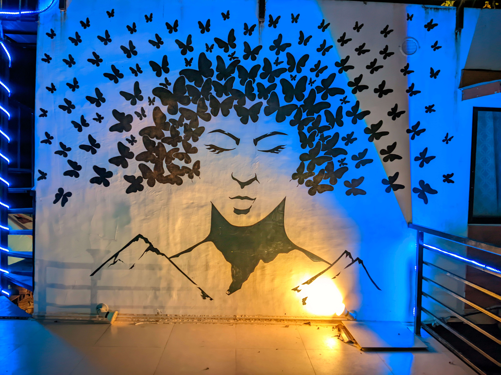
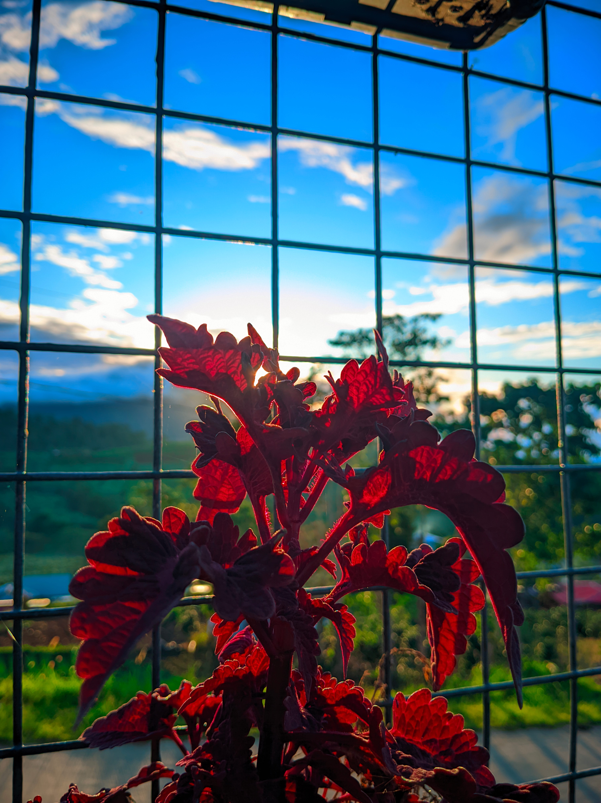

Some of my works



Kapatagan's Beauty
Captured on December 2023Kapatagan, in Digos City, is a cool place in the mountains. It feels like Baguio or Tagaytay because of its fresh, cool air. You can see amazing views of Mount Apo there. It's a beautiful spot with lots of green plants, rolling hills, and many vegetable farms. People love the coffee grown there; it smells and tastes great, perfect for the cool weather. You can also go hiking on paths to find hidden waterfalls and different plants and animals. It's a peaceful place to relax and take pictures, away from the busy city.
Also, this website
Made with HTML, CSS, JS